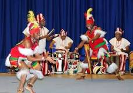
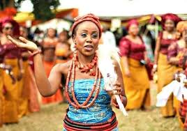
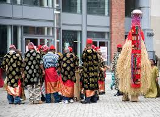

IGBO CULTURE
Igbo culture (Igbo: Ọmenala ndị Igbo) are the customs,
practices and traditions of the Igbo people of southeastern Nigeria. It comprises archaic
practices as well as new concepts
added into the Igbo culture either by cultural evolution or
by outside influence.


